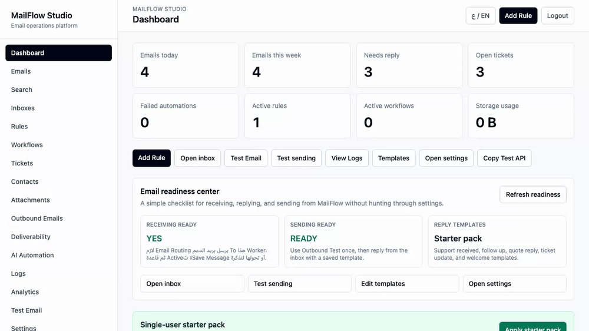
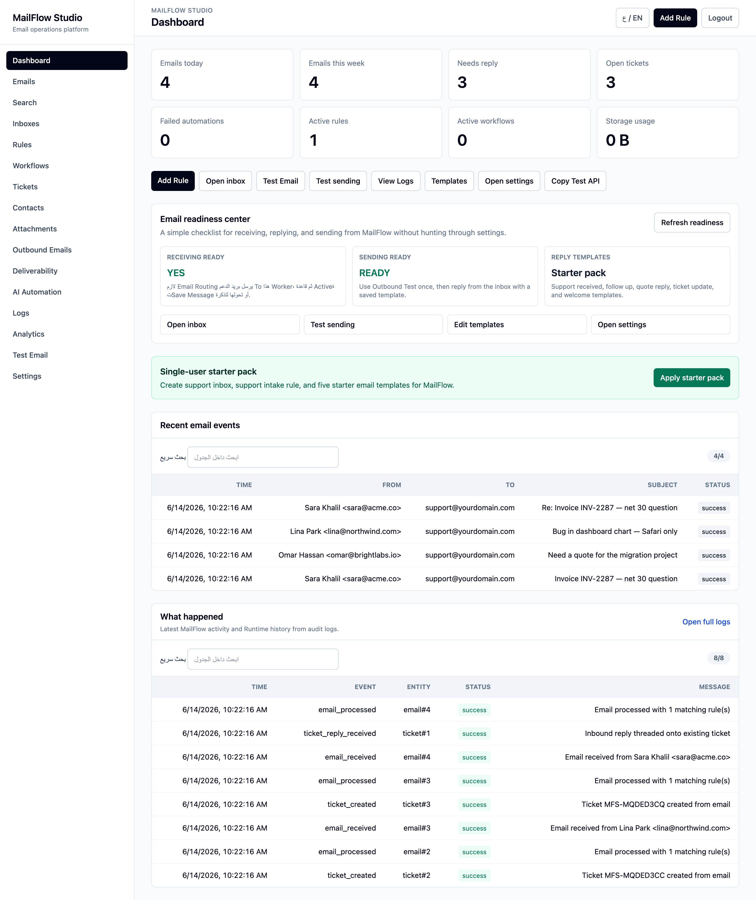
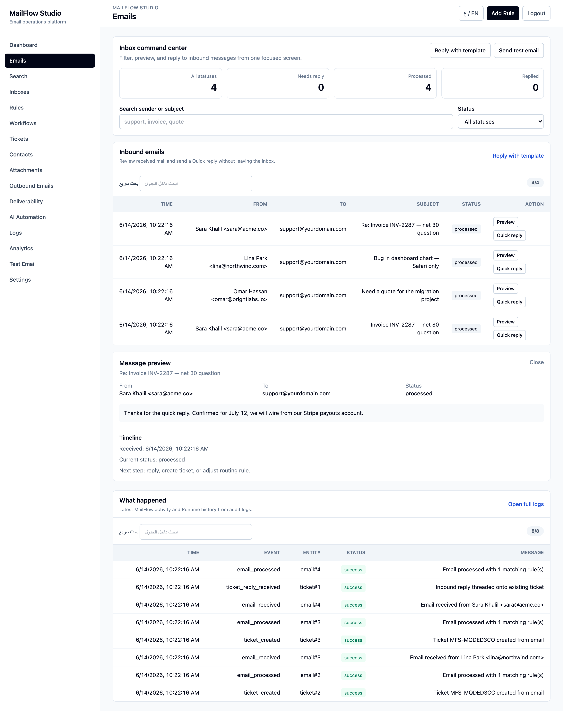
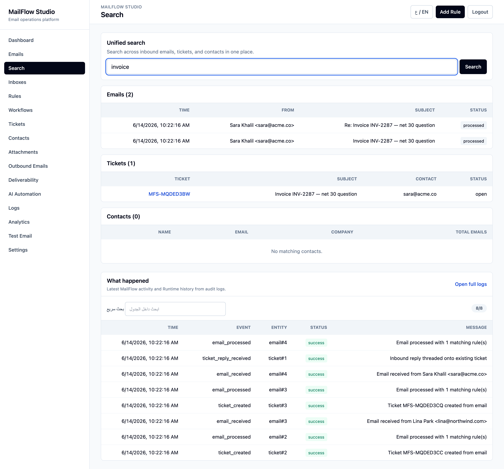
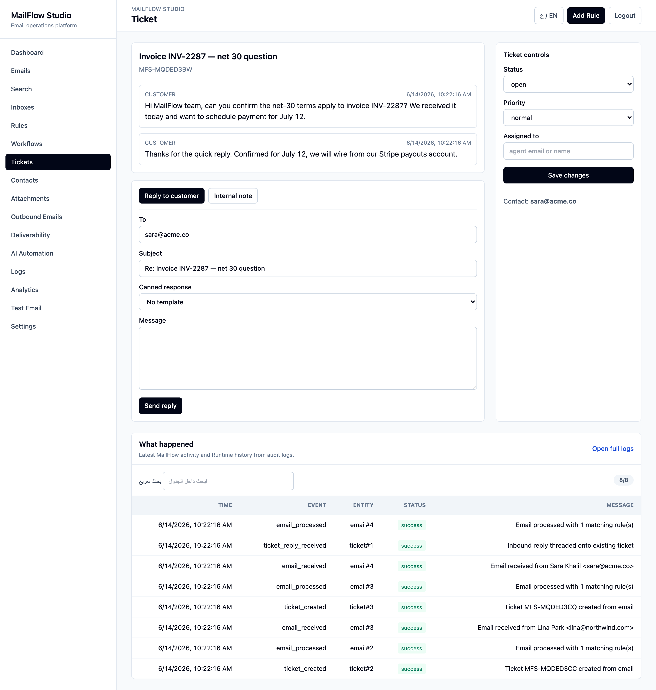

MailFlow Studio sits between your incoming email and its destination — then stores, threads, routes, automates, and logs every single message. Entirely on Cloudflare Workers. On your own infrastructure.
See it in action

A looping walk-through of the three workflows that matter most. No audio, no fluff.
Real screenshots
Captured straight from the local app with real seeded data — same Worker, same UI, same bilingual toggle.




The gap
Addresses like support@, sales@, billing@, and jobs@ land in a shared inbox. No routing, no automation, no audit trail — and the alternatives don't fit.
Messages get lost, double-handled, or silently dropped. There's no contact history, no ticketing, and no record of who did what.
Zendesk-class tools are expensive, host your customers' data on their servers, and bury simple routing under enterprise sprawl.
Wiring up an inbound mail server, parser, queue, database, and rules engine yourself means servers to patch and bills to pay — before you send a single reply.
The solution
MailFlow deploys as a single Cloudflare Email Worker. Cloudflare routes your inbound mail straight to it — no mail server, no queue infrastructure, no monthly SaaS seat. Here's the path every message takes:
Inbound mail is parsed, replies are threaded onto the right conversation, a contact is created or updated, attachments go to R2, rules and workflows run, a ticket is opened when configured, AI classifies the message, everything is logged — and you reply straight from the ticket.
Closing the gap
A nice dashboard isn't enough. These are the workflow pieces that turn raw email into something a team can run on — and they're built in, not on a roadmap.
When a customer replies, MailFlow matches it by In-Reply-To / References headers — falling back to a normalized subject — and appends it to the existing ticket instead of spawning a duplicate. The conversation stays in one place.
Answer the customer right from the ticket view. The reply goes out through the Cloudflare email binding with correct threading headers, lands on the timeline, and advances the ticket status — no copy-pasting between tabs.
Leave private notes on a ticket that the customer never sees, and drop in a saved template as a canned response. Update status, priority, and assignee from the same panel.
One query searches across inbound emails, tickets, and contacts at once — so a growing mailbox stays navigable instead of becoming a black hole.
What's inside
Live view of volume, tickets, and activity across every inbox.
Map any address to logic. One Worker, many inboxes.
Condition-based rules trigger multi-step workflows with retries.
Auto-create tickets, thread replies into one conversation, and answer from the timeline.
Search emails, tickets, and contacts from a single query.
Classify and triage with OpenAI, OpenRouter, or local Ollama. Off by default.
Send transactional replies, OTPs, and alerts via Cloudflare's email binding.
Metadata indexed in D1, files stored in R2 when enabled.
Every action recorded, with secrets automatically redacted.
Under the hood
Not just what it does — why it's built this way. A few engineering choices that keep MailFlow small, correct, and portable.
Email has no reliable conversation id, so MailFlow matches an inbound reply on its In-Reply-To / References message-ids against messages already attached to a ticket. When the headers are missing it falls back to a normalized subject for the same contact — but only when the subject actually looks like a reply (Re:/Fwd:), so two unrelated emails that share a subject never merge.
Outbound goes through Cloudflare's email binding. MailFlow builds the raw MIME with Message-ID, In-Reply-To and References so Gmail and Outlook group the reply into the original thread. The exact text sent — rendered from the template, not a placeholder — is written to the ticket timeline, and the status advances automatically.
Unified search runs case-insensitive LIKE (with ESCAPE and capped input) across emails, tickets and contacts in one round trip. It's portable across any SQLite/D1 build and needs zero triggers to maintain — the right trade-off for a small self-hosted tool. FTS5 is the drop-in upgrade when volume demands it.
The UI is authored once in English; a dictionary localizes the chrome to Arabic at render time, and the same map reverses it back to English. A cookie picks the language and flips the layout to RTL/LTR — so both languages stay in sync from a single codebase, with Arabic as the default.
Today's scope
Hardened by default
MailFlow ships with production hardening built in — because an email gateway is exactly the kind of surface attackers probe. It's documented, tested, and on by default.
Read SECURITY.md →Quick start
Clone, install, and spin up the Wrangler dev server. The full stack — D1, Email Worker, dashboard — runs on your machine. Deploy to Cloudflare when you're ready.
# clone & install
git clone https://github.com/ahmedvnabil/mailflow
cd mailflow-studio && npm install
# configure
cp .dev.vars.example .dev.vars
cp wrangler.toml.example wrangler.toml
# migrate & run
npm run migrate:local
npm run dev # → http://localhost:8787Self-hosted, MIT-licensed, and built for the edge. Star it, fork it, ship it.